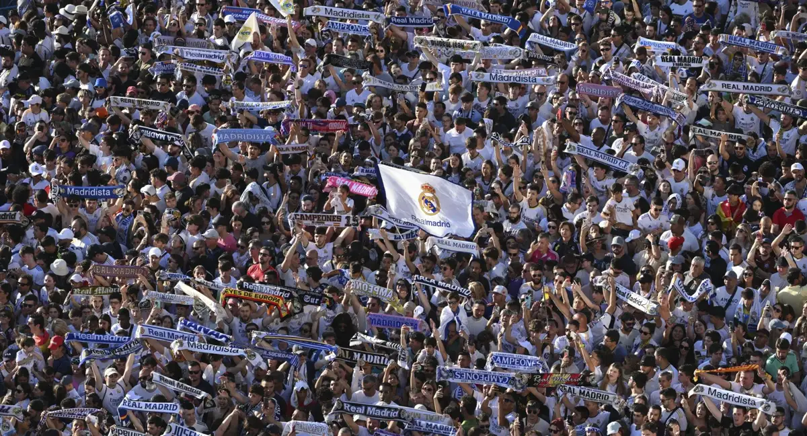
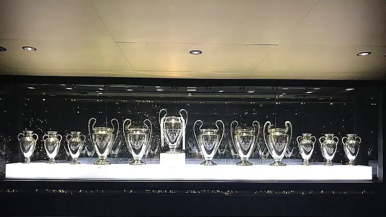
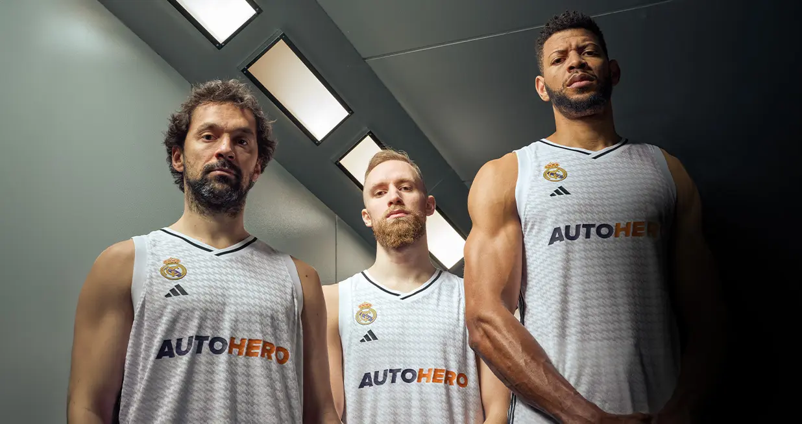

El club i els seus inicis
El Reial Madrid Club de Futbol és un club esportiu de la ciutat de Madrid, Espanya. Fundat el 6 de març del 1902, actualment té més de 99.000 socis, en qui recau la propietat del club, i més de 2.350 penyes.
El millor club del segle XX
El 1928, el Reial Madrid va ser uns dels fundadors de la Lliga espanyola de futbol i a més és, des d'aleshores, un dels 3 equips que sempre ha jugat a la Primera Divisió. Actualment, és un dels equips amb més trofeus del món, destacant entre d'altres: 36 Campionats de Lliga espanyola, 20 Copes del Rei, 13 Supercopes d'Espanya, 15 Copes d'Europa, 6 Supercopes d'Europa, 2 Copes UEFA i 5 Mundials de Clubs. Amb 36, és el club amb més títols internacionals, i va ser escollit per la FIFA com el Millor Club del segle XX.
Les seccions
Però la de fútbol no és l'única secció que té el Reial Madrid. Posseeix, a més, una altra secció de bàsquet, en la qual és el club amb més títols nacionals d'Espanya i amb més campionats internacionals d'Europa. Pel que respecte a futbol i bàsquet, té seccions filials compostes per jugadors joves els quals poden accedir al primer equip si l'entrenador d'aquest ho considera oportú. En la secció de futbol, a més, té secció femenina.
L'estadi
Per últim, pèl que respecte a l'estadi on juga els partits com a local és el Santiago Bernabéu, amb una capacitat per 81.044 espectadors. En el 2022, el Santiago Bernabéu va patir una reforma que van fer que l'estadi es modernitzés, canviant lleugerament la façana exterior i afegint-hi un sostre què permet disputar els partits en un ambient més tancat.